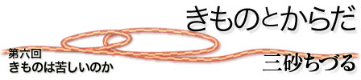

|  |
| きものを着ていると、声をかけてもらうことが多い。 「いいですねえ、おきもの。わたしも本当はもっと着たいんです」 かならず、こうおっしゃる。ほぼ、毎日、誰かに言われるので、きものの潜在人口は本当は多いはずだ、と思う。「着たい」と思っている人がみんなきものをきれば、日本はさぞ、すてきになるでしょうに。ただ、声をかけていただいくとかならずほぼ続いて、同じことを言われる。 「すてきですね。おきもの。でも、帯が苦しいでしょう？ 動きにくいですよね？」 かならず、「苦しいですよね」がついてくる。 “きもの＝なかなかすてきだが、とても苦しい”というステレオタイプはどこから来ているのだろうか。私自身はきものを着ていてすこしも苦しいと思っていないのである。帯は苦しいのか？ 毎日自分で着始める前は、わたしもそう思っていた。帯を人に締めてもらったことしかなかったからだろう。慣れてみると、いくら着付けの上手な人でも、よほどからだに対して意識の高い人に締めてもらうのでなければ、人に締められるときつい、と感じる。自分のからだになじんでいないのである。自分で、自分のからだと呼吸にあわせて巻いて行くととても気持ちがよい。呼吸にあわせて帯の位置がきまっていく。だいたい、帯は下の部分をしっかり身体につけて締めるのであって、上部は、すかすかにあいているように締めるのであるから、胃を締め付けることはない。帯揚げをしない半幅帯を締めているときは帯の上部はあいていて、なかなかよいスペースができるので、携帯電話やおさいふなどをいれておくのにぴったりである。つまり、そういうものがらくらく入るくらいであるから、苦しいところをぎゅうぎゅう締めているわけではない。 ぎっくり腰などをなさったことがある方は、経験がおありと思うが、腰をいためているときは、コルセットをして腰を外から固定していると楽である。からだでしっかり支えようとしなくてもコルセットがからだを支えてくれていて、その中でからだはゆるやかになていられる。帯はそういうコルセットと同じように、からだの幹の部分を外から支えている形になるので、からだに無理がいかない。先日、日本茶をいれていたら、ああ、これと同じだな、と思った。帯は、茶筒のように、外から形を支えている。茶筒があるのでお茶はなかで自由にさらさらと動くことができる。帯という、茶筒の中で、からだがお茶のように融通無碍な自由な感じになる。外から形をつくってもらっていることにより、からだがかたまる必要がない。帯がないと、腰周りがすかすかして、なんだかたよりないのも、「コルセットがないから自分で腰を支えていなければならない状態」になっているからだろう。帯の助けをかりて、体が支えられ、さらに保温もされている。 帯結びは、もちろんはじめから上手にはできなかったので、きものを着始めたころは半幅帯をして、お出かけするときには羽織を着ていた。半幅帯が楽でいいなあ、と思っていたが、お太鼓ができるようになると、お太鼓は、さらに安定感があっていいなあ、と思うようになった。なれると楽だし、背中の面が半幅帯より、より安定するので、腎臓がしっかりと守られ、暖かい。芸者さんから、「お客様をお見送りしているときに、すべって仰向けにひっくり返ってしまったことがあったけれども、お太鼓がクッションになって腰をうたずにすんだ」という話も聞いたことがある。背面をささえ、守る、という発想はちょと衣服の中でもめずらしいのではないだろうか。確かに夏場は帯をしていると汗もかくのだが、ちょっと冷房がきいているところにはいると、からだが急に冷えず、ありがたい。お太鼓の仕方は本によって違うし、流派によっても違うようである。わたしは笹島寿美さんの本を見て学んだ、結び目がなくて、器具も使わないやり方が、背中がぺたん、とした感じになるのがからだになじむので気に入っている。笹島さんは、腰紐一本で着付けるきものの着方も指導しておられ、からだにやさしい着方を研究しておられる方なのだなあ、と心強い。 わたしはきものを苦しいとおもっておらず、楽だなあ、と思ってきているわけだが、やっぱりきものがむかないこともあるので、あまり無理はせず、必要なときは洋服を着ている。まず、自転車は乗れない。前掛けをかけたり、もんぺ風のものを上からはいたり、という手もあるようだが、そこまでして乗らなくてもいいだろうと思うので、サイクリングに行くときは、洋服を着る。運動、体操、スポーツなどをすることになっているときにも、やはりきものより洋服のほうが着替えやすい。また、着替えのできない飛行機の長旅にも、向かないだろうと思って、今回、24時間のフライトでブラジル出張に出かけるが、きものはスーツケースにいれてしまった。ちょっとさびしい。しわのよりにくいきものに、半幅帯を締めなおせば、飛行機についてはおそらく大丈夫ではないか、とも思うので、次回はもうすこし準備をして、きもので飛行機の長旅もトライしてみよう。 三砂ちづる（みさご・ちづる） 疫学者 |